① 照節次讀：每一節先讀說明、動手玩互動元件，預測結果再按按鈕驗證。 ② 對照講義：頁上 §徽章對應 cppds 章節；講義的完整程式收在各節的收合區，預期輸出放在收合區外，可以先猜輸出再展開程式對照。 ③ 每節做 quiz：答錯就回到該節重讀，不要往下跳。 ④ 最後翻 關鍵詞彙卡（12 張）自測術語（用語與正文一致，附中英對照），並用 REF 總覽區與重點回顧當速查表。標「課堂略過・自學」的節是講義內容，只是上課沒有細講，請自己讀完；標「（補充）」的收合區是網站另加、講義沒有的延伸，第一輪可略過。
遞迴（recursion）是一種解題方法：把問題拆成越來越小的子問題，直到子問題小到可以直接解決。寫成程式時，通常就是函式呼叫自己。有些問題用迴圈很難寫，用遞迴卻能寫得簡潔。
要算 {1, 3, 5, 7, 9} 的總和，迴圈版用一個累加變數 theSum：從 0 開始，把每個數依序加進去，迴圈結束時 theSum 就是總和。
25 0
第一行是 1 + 3 + 5 + 7 + 9 = 25；空的 vector 沒有元素可加，theSum 維持 0。參數用 const 參考傳入，不會複製 vector，也保證函式不會修改它。
如果不能用迴圈，要怎麼加總？先想起加法是「兩個數」的運算。把整串加法改寫成完全括號化的運算式（fully parenthesized expression），每一對括號裡只做一次兩數相加：
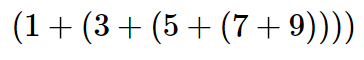
最裡面的 (7 + 9) 不需要迴圈或任何特殊結構就能算。算完之後換成 16，式子少了一層括號，形狀卻沒變。照這個方法一路化簡：
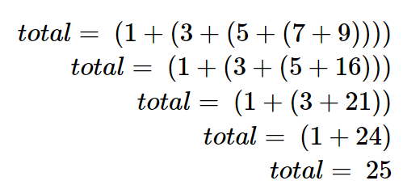
每一步都在解一個「比原本少一項」的同型問題。這就是遞迴的想法：相信較短的問題有辦法解決，再用它的答案組出原本問題的答案。
改用 C++ 的 vector 描述同一件事：從索引 index 開始的總和，等於 numList[index] 加上從 index + 1 開始的總和。當 index == numList.size() 時，剩下的範圍是空的，總和是 0。每次呼叫都只傳同一個 vector 和一個索引，不必配置新的子 vector。
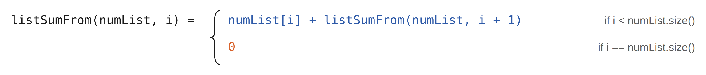
25 0
輸出和迴圈版相同。listSum 只是包裝：從索引 0 開始呼叫 listSumFrom。
listSumFrom 在 index == numList.size() 時停止。這個 base case 代表「剩下的範圍是空的」，總和為 0，所以 listSum({}) 也能安全地回傳 0。index 加一。同一個 vector 以 const 參考傳下去，遞迴過程中不會被複製，也不會被修改。下圖是加總 {1, 3, 5, 7, 9} 所需的一連串遞迴呼叫（圖中的 sum(3,5,7,9) 表示「從 3 開始到結尾的總和」）。把這串呼叫看成一連串的化簡：每次呼叫都把問題縮短一項。
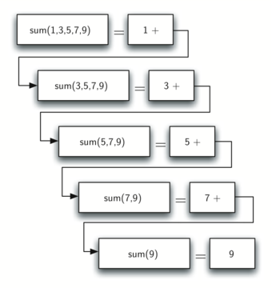
問題簡化到不能再簡單時，就開始把各個小問題的答案組合起來，一路回到最初的問題：
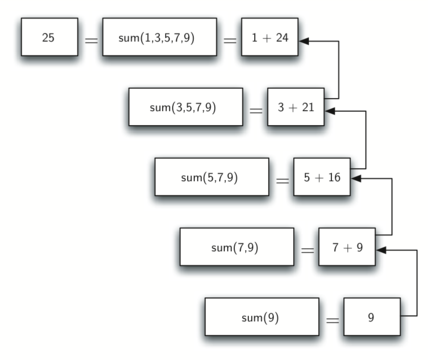
下面的動畫把同一件事拆成一步一步：先往下展開，碰到 base case 之後再一層層回傳。按「→ 單步」可以停在任何一步。
const vector<int>& numList 以唯讀參考傳入，每次呼叫都不複製容器；size_t index 是無號索引，從 0 開始，等於 numList.size() 時先回傳 0，不會越界。詳見 P3 傳參方式。
用本頁的 listSum 計算 {2, 4, 6, 8, 10}。listSumFrom 總共被呼叫幾次（包含 listSum 發出的第一次）？
可以。凡是遞迴能算的，迴圈都能算，反過來也一樣；遞迴時由系統替你保存每一層的狀態，改寫成迴圈時就要自己保存，例如用一個 stack。遞迴的好處是讓程式的形狀跟問題的定義一致：listSumFrom 的兩行幾乎就是上面那條分段定義。後面的樹、分治與回溯問題，用遞迴寫特別自然。
就像艾西莫夫小說裡的機器人要遵守三大法則，所有遞迴演算法也必須遵守下面三條法則。寫完遞迴之後，用它們逐條檢查。
index == numList.size()），總和為 0。index 加一，所以每次遞迴呼叫，未處理的範圍都短一項。學寫函式時，我們學到可以把大問題拆成小問題，每個小問題各寫一個函式。講到遞迴，聽起來像在繞圈子：要用一個函式解決問題，這個函式卻靠呼叫自己來解決。關鍵在法則 2：每次呼叫自己時，問題都比原本更小、更容易，而且一定會碰到可以直接回答的 base case。
int f(int n) { return n + f(n - 1); } 違反了哪條法則？執行會怎樣？
要寫遞迴的 fact(n)，回傳 n × (n−1) × (n−2) × …，並規定 0 的階乘是 1。哪一個 base case 最合適，而且最有效率？
假設要把整數轉成 2 到 16 進位之間某種進位的字串。例如把整數 10 轉成十進位的 "10"，或二進位的 "1010"。這個問題有很多種解法，上一章用 stack 就做過一次；用遞迴寫則特別簡潔。
以十進位的 769 為例。先準備一串字元 convertString = "0123456789"，對應前 10 個數字。小於 10 的數很容易轉換：直接用它當索引查表。
如果能把 769 拆成 7、6、9 三個一位數，轉成字串就很簡單。「小於進位的數」聽起來就是個好的 base case。確定 base case 之後，整個演算法有三個部分：
下一步要決定怎麼改變狀態、朝 base case 前進。能讓數字變小的運算，最可能是除法與減法。減法也許可行，但不清楚該減什麼；整數除法加上餘數，方向就很明確。
769 除以 10，商 76、餘數 9，同時得到兩個有用的結果：餘數小於進位，可以馬上查表轉成字串；商比原本的數小，往「只剩一個小於進位的數」的 base case 前進了一步。接著把 76 再除以 10，得到 7 與 6：
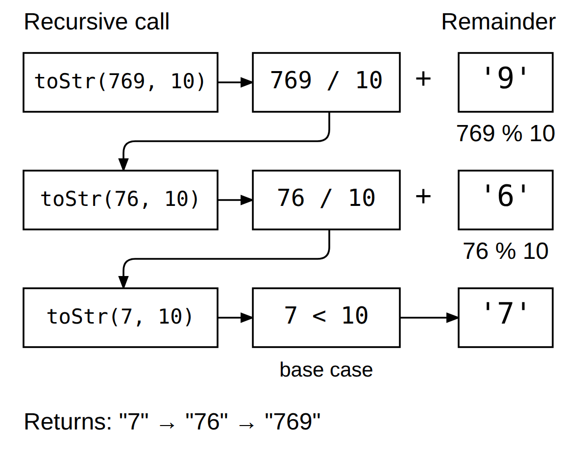
要記住的數字，都在圖右側的餘數格裡。
5AD
1453 = 5 × 256 + 10 × 16 + 13，三個位數 5、10、13 查表後是 5、A、D。if (n < base) 檢查 base case：一旦 n 小於要轉換的進位，就停止遞迴，直接從 convertString 取出字元。else 分支同時滿足第二與第三條法則：用除法縮小問題，並呼叫自己。
再追蹤一次，這次把 10 轉成二進位字串 "1010"：
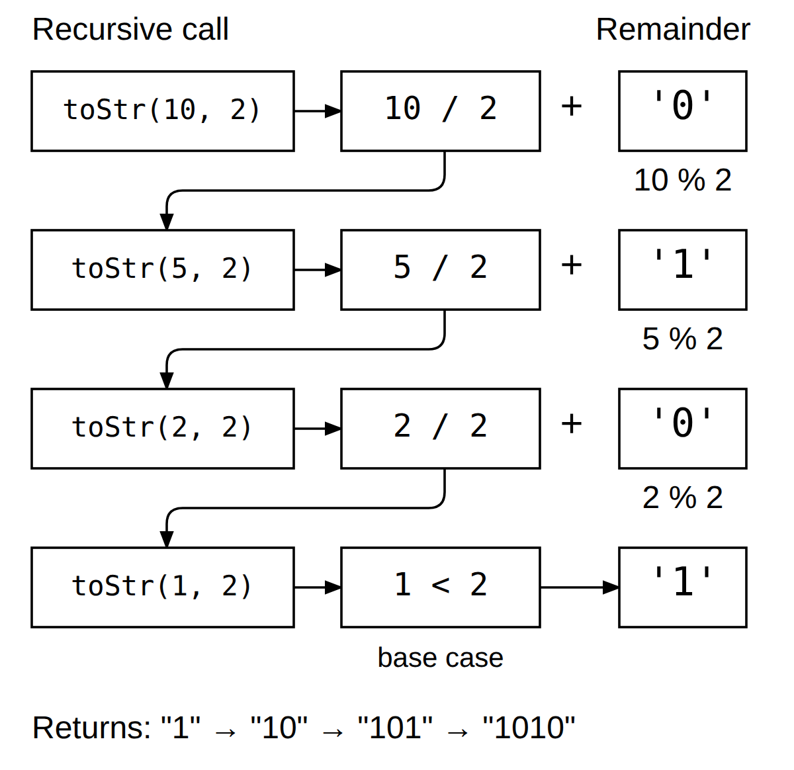
餘數產生的順序看起來是反的，但結果是對的：程式先做遞迴呼叫，等它回傳之後，才接上餘數的字元。如果把這兩件事的順序對調，先接上查到的字元、再處理商，得到的字串就會倒過來。把串接延後到遞迴呼叫回來之後，結果就是正確的順序。這和上一章討論的 stack 是同一個道理。
在下面的動畫中輸入其他數字或換成二進位、十六進位，觀察每一層何時展開、何時接上自己的餘數。
寫一個遞迴函式，接收一個字串，回傳順序相反的新字串。講義的程式挖了兩個空格，先自己想想再看解答。
照原樣編譯會失敗：____ 是要填的空格。
用三法則檢查：base case 是長度不超過 1，空字串與單一字元本身就是自己的反轉；s.substr(1) 每次少一個字元，確實朝 base case 前進；而且它呼叫自己。跟 toStr 是同一個骨架：把「接上字元」延後到遞迴回來之後，順序就自動反過來。執行時沒有輸出，表示兩個 assert 都通過。
哪一個 base case 能讓遞迴的 reverse(string s) 同時正確處理空字串與單一字元？
把最後一行改成 return s[0] + reverse(s.substr(1));，會得到什麼？
假設在 toStr 裡不做遞迴呼叫，而是把查到的字元推入一個 stack。用 STL 的 stack，就能用一個存放字元的顯式堆疊取代遞迴：
5AD
輸出和遞迴版相同。第一個迴圈從最低位開始，把每個餘數字元推入 rStack；第二個迴圈從頂端依序取出，最高位就排在最前面。
每做一次除法，就推入一個字元。回到前面轉換 10 的例子，除完四次之後，堆疊長這樣：
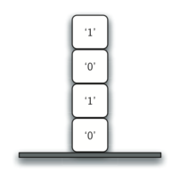
接著只要把字元一個個 pop 出來接成字串，就得到 "1010"。
上面的例子說明了 C++ 實作遞迴呼叫的方式。對每一個進行中的函式呼叫，執行環境都維護一個 stack frame，裡面放著這次呼叫的參數、區域變數與返回資訊。函式回傳時，回傳值留在堆疊頂端，讓呼叫它的函式取用。下圖是 return 之後的呼叫堆疊：
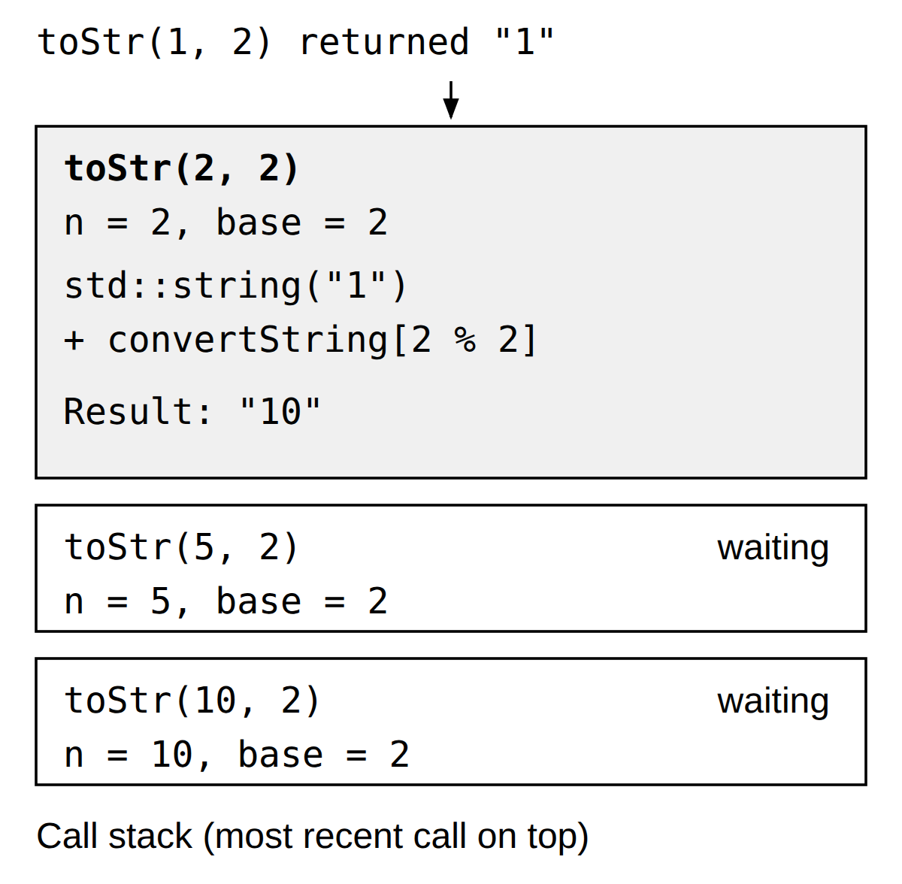
toStr(2 / 2, 2) 回傳 "1"。這個值代回 toStr(1, 2) + convertString[2 % 2]，得到 "10"，之後較早的呼叫才繼續依序回傳。
這樣看來，C++ 的呼叫堆疊取代了我們剛才明確使用的 stack。在 vector 加總的例子裡，也可以把堆疊上的回傳值想成取代了累加變數的角色。
stack frame 也為函式的變數提供了作用域。雖然一再呼叫的是同一個函式，每次呼叫都會建立新的作用域，存放這次呼叫自己的區域變數：toStr(10, 2) 與 toStr(5, 2) 各有一個 n，彼此不會互相覆蓋。
按「→ 單步」看每一次呼叫推入一個 frame，碰到 base case 之後再一格一格彈出。堆疊頂端顯示 toStr(2, 2) 得到 "10"、下面兩格還在等待的那一格，就是上圖的狀態。
n 與 base。在函式裡用一個全域變數記錄目前是第幾次呼叫，就能在輸出中看到堆疊長高的過程。
depth=1, n=10 depth=2, n=5 depth=3, n=2 depth=4, n=1 1010
四次呼叫的 n 依序是 10、5、2、1，n 每除一次 2 就多一層 frame。最深的那層先回傳 "1"，回程時再依序接上 0、1、0。這裡的 depth 只增不減，所以它記錄的是「第幾次呼叫」；在這條單一路徑上，剛好也等於深度。
另一個常見的例子是階乘。fact(4) 要等 fact(3)，fact(3) 要等 fact(2)……每一層都在堆疊上留下一個 frame，直到 fact(1) 回傳 1，再一路乘回來。
上課時略過本節，留給自學。
有時候很難在腦中想像遞迴函式到底在做什麼，這也是遞迴不容易掌握的原因之一。本節用遞迴畫出一些圖形。看著圖形一步步成形，比較容易看清遞迴的過程。
CTurtle.hpp：cturtle::TurtleScreen 負責繪圖視窗，cturtle::Turtle 在視窗裡移動。課程的 notebook 只執行主控台程式，所以本節的 CTurtle 程式只供閱讀，不會執行。想在自己的電腦上執行，要另外取得 CTurtle.hpp，放在原始檔旁邊，再編譯成桌面程式。本頁的互動圖用瀏覽器的 canvas 畫出同樣的圖形，不需要安裝。先看一個簡單的例子：用遞迴畫螺旋。base case 是要畫的線段長度減到 0 或以下。長度大於 0 時，讓烏龜往前走 length 單位、右轉 90 度，再用短一點的長度呼叫自己。
遞迴呼叫時長度減 5。長度減到 0 或以下時函式直接回傳；整個圖畫完之後，screen.bye() 關閉 CTurtle 的視窗。
接著看碎形（fractal）。碎形來自數學的一個分支，和遞迴有很多共通點。依定義，碎形不管放大多少倍，基本形狀都一樣。大自然中的例子有海岸線、雪花、山脈，甚至樹木與灌木。因為這種性質，程式設計師可以用碎形為電腦動畫產生非常逼真的景物。
既然碎形在各種放大倍率下看起來都一樣，套到樹上就是：連一根小樹枝，都和整棵樹有相同的形狀與特徵。所以可以這樣定義樹：一棵樹是一段樹幹，右邊長出一棵較小的樹，左邊也長出一棵較小的樹。用遞迴的觀點看這個定義，就是把同一個定義再套用到左右兩棵較小的樹上。
完整的桌面程式會建立 cturtle::TurtleScreen、讓烏龜朝上，呼叫 tree(75, turtle)，畫完後關閉視窗。
兩次遞迴呼叫分別發生在右轉 20 度與左轉 40 度之後：左轉 40 度先抵銷原本的右轉 20 度，再往左多轉 20 度。每次呼叫都把 branchLen 減 15，branchLen > 5 不成立時就不再遞迴，這就是 base case。最後的右轉 20 度與後退，讓烏龜回到這次呼叫開始時的位置與方向，上一層才能接著畫另一邊。
下面用 canvas 畫出同樣的兩個圖形，參數和講義相同：spiral(turtle, 100) 與 tree(75)（圖按比例放大）。tree 每層把 branchLen 減 15，75、60、45、30、15 共五層；拉動滑桿只畫到前幾層，比較每多一層時樹多長出多少枝。
注意樹上的每個分岔點都對應一次遞迴呼叫，而且程式會一路往右畫到最短的小樹枝：
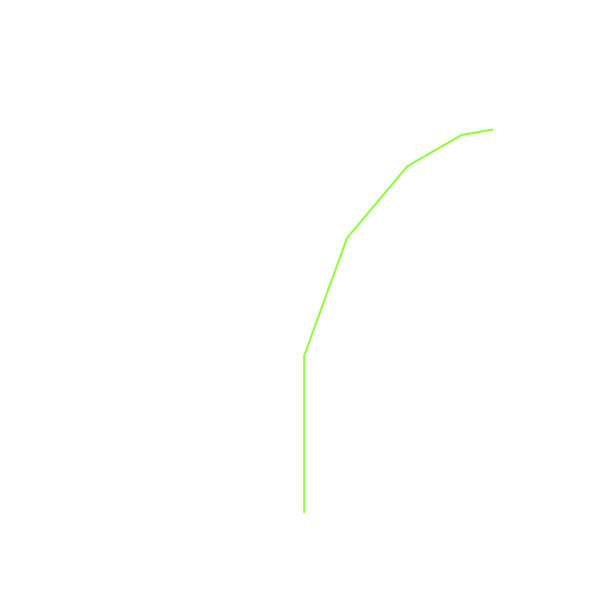
接著程式沿著樹幹往回退，直到整棵樹的右半邊都畫完：
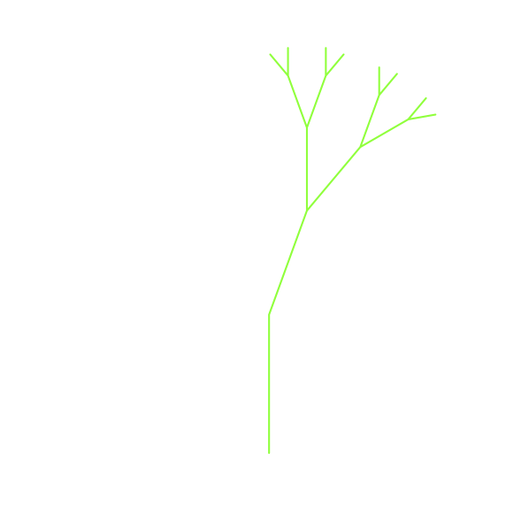
然後開始畫左半邊，但不是一路往左畫到底。左子樹的右半邊同樣會先整個畫完，最後才走到最左邊的小樹枝。這個簡單的樹程式只是起點：程式畫的樹完全對稱，所以看起來不太真實，大自然可沒有這麼整齊。
上課時略過本節，留給自學。
Sierpinski 三角形是一個三路遞迴的例子。用手畫的步驟很簡單：
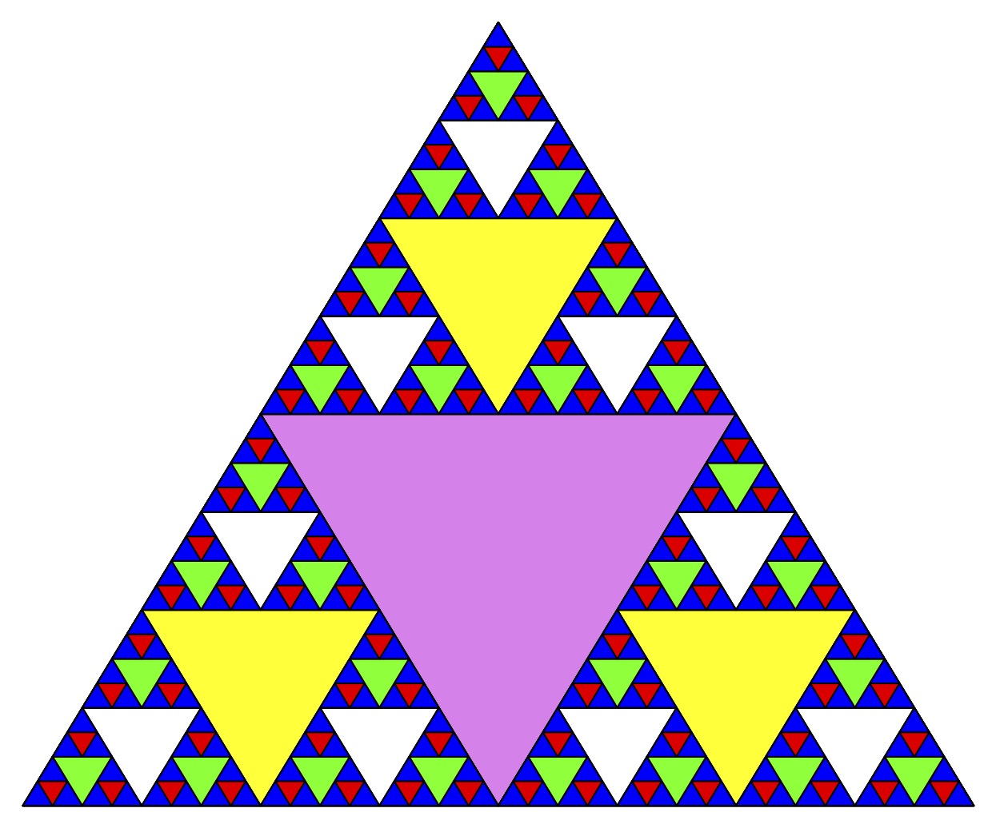
base case 是什麼？這裡的 base case 是人為設定的：要把三角形分割幾次。這個次數稱為碎形的 degree（深度）。每做一次遞迴呼叫，degree 就減 1；degree 減到 0 時，不再遞迴呼叫。
程式分成三段。第一段的 drawTriangle 用指定顏色畫出並填滿一個三角形：
第二段是 sierpinski 本身。它有三個遞迴呼叫，每個呼叫對應連接中點之後得到的一個角落小三角形：
ct::middle(a, b) 回傳 a、b 兩點的中點。顏色用 degree 當索引，所以同一層的三角形顏色相同。
第三段的 main 建立視窗，設定三個頂點，用 degree 3 開始畫：
這是 CTurtle 的桌面程式，在 notebook 中只供閱讀；三個頂點依序是左下、上方、右下。
下面用 canvas 畫出同樣的圖形，拉動 degree 觀察三角形的數量怎麼成長。
看著程式想想看，三角形會以什麼順序畫出來？假設三個角依序是左下、上方、右下。因為 sierpinski 呼叫自己的方式，它會先一路畫到左下角最小的三角形，再往回補齊其他三角形。接著往上方角落，一路畫到最上面最小的三角形；最後才是右下角。把遞迴演算法畫成函式呼叫圖，常常有助於理解：
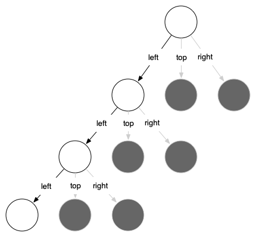
正在執行的函式畫成黑框，還沒執行的呼叫是灰色。越往下，三角形越小。函式一次完成一層：左下角畫完之後，才移到上方角落，最後才是右下角；每一層裡的三個小三角形都照這個順序。
degree = 3 時，sierpinski 總共被呼叫幾次（含最外層那一次）？
河內塔是法國數學家 Édouard Lucas 在 1883 年發明的謎題。他的靈感來自一個傳說：一座印度教寺廟裡，年輕的僧侶被交付這個謎題。一開始他們拿到三根柱子，以及疊成一疊的 64 個金盤，每個盤子都比下面那個小一點。他們要把 64 個盤子從一根柱子全部搬到另一根，並遵守兩條規則：
傳說僧侶日夜不停，每秒搬一個盤子，搬完的那天，寺廟會化為塵土，世界也將消失。不必擔心：正確搬完 64 個盤子需要 $2^{64}-1 = 18{,}446{,}744{,}073{,}709{,}551{,}615$ 步，每秒一步要花 $584{,}942{,}417{,}355$ 年。
下圖是把整疊盤子從起始柱（fromPole）搬到目標柱（toPole）的過程中，某個時刻的樣子；另一根是借用的中間柱（withPole）。依照規則，每根柱子上都是小盤在上、大盤在下：
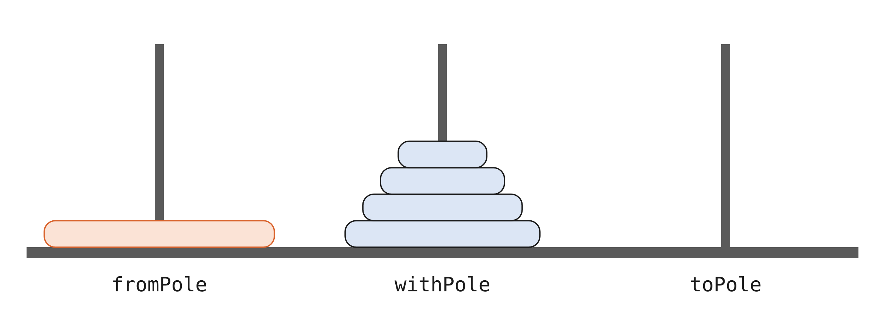
假設 fromPole 上有五個盤子。如果你已經知道怎麼把四個盤子的塔搬到 withPole，就能把最下面的盤子搬到 toPole，再把那四個盤子從 withPole 搬到 toPole。
可是如果不知道怎麼搬四個盤子呢？假設你知道怎麼把三個盤子的塔搬到 toPole，那就能把第四個盤子搬到 withPole，再把三個盤子從 toPole 疊到它上面。如果連三個盤子都還不會呢？至少把一個盤子搬到 toPole 很容易，簡單到不值一提。這聽起來就是 base case。
把高度 h 的塔從起始柱（fromPole）搬到目標柱（toPole），中途借用中間柱（withPole）：
最簡單的非空河內塔只有一個盤子：直接把它搬到目的地。程式中的 base case 是高度 0 的塔，什麼都不用搬。步驟 1 與步驟 3 都讓塔的高度減一，所以會朝 base case 前進。每一層各搬一個盤子，搬 n 個盤子總共要 $2^n - 1$ 步。
下面的動畫照講義程式的呼叫 moveTower(n, "A", "B", "C") 擺放柱子：A 是 fromPole、B 是 toPole、C 是 withPole，所以目標柱 B 在中間，和上圖目標柱在右邊不同。每根柱子下方都標出它的角色。
moving disk from A to B moving disk from A to C moving disk from B to C moving disk from A to B moving disk from C to A moving disk from C to B moving disk from A to B
main 呼叫 moveTower(3, "A", "B", "C")：從 A 搬到 B，借用 C。7 行輸出等於 2³ − 1 步。base case 是高度 0 的塔：這時什麼都不做，moveTower 直接回傳。base case 一回傳，上一層就接著執行 moveDisk。
看完 moveTower 與 moveDisk，你也許會疑惑：為什麼沒有一個資料結構明確記錄每根柱子上有哪些盤子？如果要明確追蹤，可以用三個 Stack 物件，每根柱子一個。遞迴的 C++ 程式則是靠執行時的呼叫堆疊，記住所有暫停中的呼叫：每個還沒結束的 moveTower 都記得自己要從哪裡搬到哪裡、搬到第幾步。
這一節要解一個和機器人有關的問題：怎麼走出迷宮？我們要幫一隻烏龜走出虛擬的迷宮。迷宮問題可以追溯到希臘神話：忒修斯被派進迷宮殺死牛頭人，他用一團線標記來路，事後才找得到出口。這裡假設烏龜被丟在迷宮中間某處，必須自己找到出口。
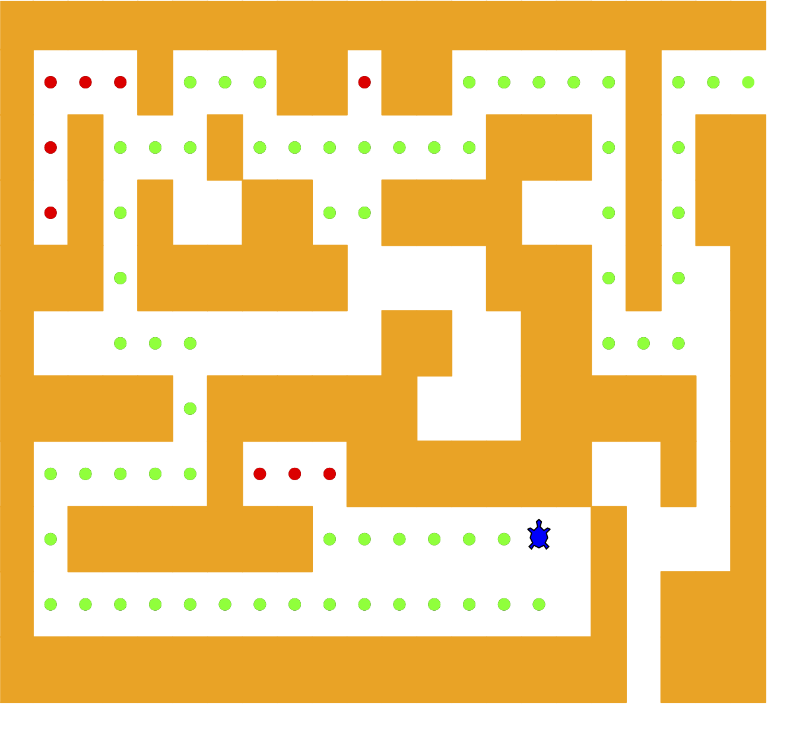
為了簡化，假設迷宮被切成方格，每一格不是通道就是牆。烏龜只能走通道，撞到牆就換一個方向。程序如下：
聽起來很簡單，但有個細節要處理。假設第一步往北，照程序，下一步還是先往北；如果北邊是牆，就改試南邊。可是往南一步就回到了原本的起點，從那裡再執行程序，又會往北走一步，然後無限循環下去。所以必須記住走過哪些地方。
假設烏龜帶著一袋麵包屑，邊走邊撒。往某個方向走一步，發現那一格已經有麵包屑，就立刻退回來，試程序中的下一個方向。之後看程式就會知道：退回來，就只是從遞迴呼叫回傳。
以下面這個迷宮為例：+ 是牆，空白是通道，S 是起點。
++++++++++++++++++++++ + + ++ ++ + + + + +++ + ++ + + + ++ ++++ + ++ +++ ++++++ +++ + + + ++ ++ + +++++ ++++++ +++++ + + + +++++++ + + + +++++++ S + + + + +++ ++++++++++++++++++ +++
Maze 物件提供下列方法，供搜尋演算法使用：
Maze(filename)：建構子，讀入代表迷宮的資料檔，建立迷宮的內部表示，並找出起點的位置。print()：印出目前的字元格子。updatePosition()：更新迷宮中某一格存放的字元。isExit()：檢查目前位置是不是迷宮的出口。另外還有 get(row, col)，讓演算法可以讀取任一格的狀態。迷宮的每種狀態用一個具名常數表示。C++ 版不畫烏龜動畫，而是把進度印成文字：
START 是起點，OBSTACLE 是牆，TRIED 是走過的格子（麵包屑），DEAD_END 是確定走不通的格子，PART_OF_PATH 是通往出口的路。
建構子 Maze(filename) 只有一個參數：檔名。這個文字檔用 + 表示牆、空白表示通道、字母 S 表示起點。
建構子逐列讀檔，把每一列放進 mazeList，記下列數與欄數，再找出 S 所在的列與欄。startRow、startCol 是 public，main 要用它們開始搜尋；mazeList、rowsInMaze、columnsInMaze 是 private，只能透過成員函式存取。
C++ 的 Maze 把字元格子存在名為 mazeList 的 vector<string> 裡。每個 string 是一列，所以 mazeList[row][col] 就是一格。C++ 版保留同樣的遞迴狀態轉換，並印出字元格子；每次更新都會留在最後的格子裡，不需要圖形視窗：
isExit() 用目前的位置檢查是否到達出口：只要烏龜走到迷宮的邊緣，也就是第 0 列、第 0 欄、最右邊一欄或最下面一列，就是出口。
搜尋函式叫做 searchFrom()，有三個參數：一個 Maze 物件、起始的列與起始的欄。起始位置要當成參數傳入，因為它是遞迴函式，每次遞迴呼叫，搜尋在邏輯上都從新的位置重新開始。
前三個 if 是 base case 1 到 3；四個方向都回傳 false，就是 base case 4，這一格標成 DEAD_END。
遞迴步驟裡有四個 searchFrom() 呼叫，很難事先知道會用到幾個，因為它們用 || 連接：只要前面的呼叫成功，短路求值就會跳過後面的呼叫。如果第一個呼叫（往北）回傳 true，其他三個都不會執行；從幾何上看，北邊那一步就在通往出口的路上。往北失敗，才依序試南、西、東。四個呼叫都回傳 false，目前這一格就是死路。
下面的動畫在一個較小的迷宮上執行同樣的 searchFrom。注意每一格怎麼先被標成走過，四個方向都試完後，再改成路徑或死路。
課程資料夾裡已經有迷宮檔 maze2.txt：
++++++++++++++++++++++
+ + ++ ++ +
+ ++++++++++
+ + ++ ++++ +++ ++
+ + + + ++ +++ +
+ ++ ++ + +
+++++ + + ++ + +
+++++ +++ + + ++ +
+ + + S+ + +
+++++ + + + + + +
++++++++++++++++++++++
++++++++++++++++++++++ +-OO+OOO++ ++ + OOOOOO+OOO ++++++++++ +-+-OO ++O ++++ +++ ++ +-+-OO+ +O++ OO +++ + +---OO OO++OO++ + + +++++-+ +-OOOOO++ + + +++++-+++--+-+OO++ + +----------+-+ O+ + + +++++-+--+-+-+ + + ++++++++++++++++++++++
印出的結果中，O 是成功的路徑，- 是死路，. 是走過的格子。這次的結果裡沒有 .：每一格離開 searchFrom 之前，都會從 TRIED 改成 PART_OF_PATH 或 DEAD_END。路徑從 S 往北走，最後在左邊界、第 2 列（從第 0 列算起，也就是輸出的第 3 行）找到出口；左下方那一大片 -，是往南與往西探索後退回來的痕跡。
上課時略過本節，留給自學。
電腦科學中有許多程式是在最佳化某個值，例如找兩點之間的最短路徑、找最符合一組點的直線，或找出滿足某些條件的最小物件集合。電腦科學家解這類問題有很多策略，動態規劃（dynamic programming）是其中之一。
最佳化問題的經典例子，是用最少的硬幣找零。假設你在販賣機公司寫程式，公司希望每筆交易找的硬幣越少越好。顧客投入一元紙鈔，買了 37 分的東西，要找 63 分。最少要用幾枚硬幣？
答案是 6 枚：兩個 25 分、一個 10 分、三個 1 分。怎麼得到的？從手上最大的硬幣（25 分）開始，能用幾枚就用幾枚，再換下一種較小的硬幣，依此類推。這種做法稱為貪婪法（greedy method），因為它每一步都想馬上解決盡量大的一部分問題。
用美國硬幣時，貪婪法沒有問題。但假設公司把販賣機賣到另一個國家，那裡除了 1、5、10、25 分，還有 21 分硬幣。這時貪婪法找 63 分仍然給出 6 枚，最佳解卻是三枚 21 分。
改用遞迴，先找 base case：要找的金額剛好等於某種硬幣的面額，答案很簡單，就是一枚。金額不相等時有幾種選擇：1 分硬幣加上「原金額減 1 分」所需的硬幣數、5 分硬幣加上「原金額減 5 分」所需的硬幣數，依此類推，取其中最小的。所以原金額需要的硬幣數是：
$$num\_coins = \min\begin{cases}1 + num\_coins(original\ amount - 1)\\ 1 + num\_coins(original\ amount - 5)\\ 1 + num\_coins(original\ amount - 10)\\ 1 + num\_coins(original\ amount - 25)\end{cases}$$2
26 分最少要 2 枚（25 + 1）。函式一開始檢查 base case：金額是否剛好等於某一種硬幣。不是的話，對每一種不超過金額的硬幣各做一次遞迴呼叫，取最小值再加一。
這個演算法的問題是效率極差。用 4 種硬幣找 63 分，要做 67,716,925 次遞迴呼叫才找到最佳解。下圖是找 26 分所需的 377 次呼叫中的一小部分：
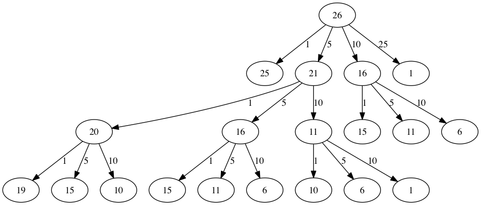
圖中每個節點是一次 makeChange1() 呼叫，節點上的數字是這次要找零的金額，箭頭上的數字是剛用掉的硬幣。主要的問題在於重複做太多計算。例如圖中可以看到，15 分的最佳硬幣數至少被重算三次，而每算一次 15 分，本身就要 52 次函式呼叫。重算舊結果，白白浪費了大量時間。
makeChange1(26): 2 coins, 377 calls makeChange1(15): 2 coins, 52 calls makeChange2(63): 6 coins, 221 calls knownResults[0..10]: 0 1 0 0 0 1 2 3 4 5 1
每進入函式一次就把計數器加一。26 分與 15 分的次數就是上面說的 377 與 52；記憶化版本找 63 分只要 221 次。最後一行是 knownResults 的前 11 格：2、3、4 分是 0，表示這幾格從沒被填過。
減少計算量的關鍵，是記住過去的結果，避免重算已知的答案。簡單的做法是：每找到一個金額的最少硬幣數，就存進一張表。計算新的最小值之前，先查表；表裡已經有結果，就直接使用，不再重算。
6
63 分最少要 6 枚（25 + 25 + 10 + 1 + 1 + 1）。knownResults 的索引是金額，0 表示還不知道答案。
以上面這份程式來說，查表把 4 種硬幣、63 分的計算降到總共 221 次呼叫。呼叫次數取決於查表與存表放在哪裡，所以組織方式不同、但同樣做記憶化的函式，次數可能不一樣。
不過這看起來有點像拼湊出來的補丁。而且看看 knownResults 這張表，會發現表裡有些洞（例如 2、3、4 分始終沒有填）。嚴格說來，這樣做還不算動態規劃；我們是用一種叫做記憶化（memoization），更常稱為快取（caching）的技巧改善了程式的效能。
真正的動態規劃演算法用更有系統的方式處理問題：從找 1 分開始，一路往上算到要找的金額。這樣保證演算法的每一步，都已經知道任何較小金額所需的最少硬幣數。看看找 11 分時，最少硬幣數的表格怎麼填：
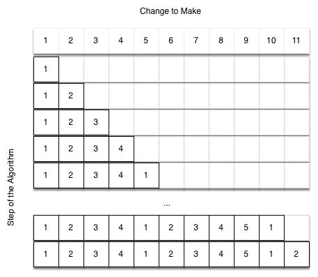
從 1 分開始，唯一的找法是一枚硬幣。下一列是 1 分與 2 分的最小值，2 分同樣只能用兩個 1 分。第五列開始有意思：要考慮兩種選擇，五個 1 分或一個 5 分。怎麼決定哪個好？查表：4 分需要 4 枚，再加一個 1 分湊成 5 分，共 5 枚；或者 0 分再加一個 5 分，共 1 枚。1 與 5 取最小，表裡存 1。快轉到表的最後，看 11 分。
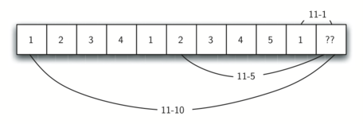
有三個選擇要考慮：
第 1 與第 3 個選擇都只要 1 + 1 = 2 枚，所以 11 分最少要 2 枚。
makeChange3() 是由下往上的動態規劃版本。它接收合法的硬幣面額、要找的金額，以及一個 vector，存放 0 到目標金額每一個金額的最少硬幣數。
6
結果和 makeChange2 相同，都是 6 枚，但完全沒有遞迴。
makeChange3() 不是遞迴函式。對 0 到 change 的每個金額，內層迴圈檢查每一種面額，並存下由較小金額已算出的最佳結果。設目標金額為 $A$、硬幣種類數為 $C$，工作量是 $O(AC)$，表格使用 $O(A)$ 的空間。
| 版本 | 策略 | {1, 5, 10, 25} 找 63 分 |
|---|---|---|
makeChange1 | 天真遞迴 | 67,716,925 次呼叫 |
makeChange2 | 記憶化（memoization），由上而下 | 221 次呼叫 |
makeChange3 | 動態規劃，由小到大填表，不遞迴 | 64 格 × 4 種硬幣的檢查，$O(AC)$ |
只要再記住表中每一格「最後加上的那枚硬幣」，就能把 makeChange3 擴充成能追蹤用了哪些硬幣。知道最後加的硬幣，把金額減去它的面額，就找到表中前一格，那一格又記著它最後加的硬幣。一路往回追，直到金額為 0。
Making change for 63 requires the following 3 coins: 21 21 21 The used list is as follows: 1 1 1 1 1 5 1 1 1 1 10 1 1 1 1 5 1 1 1 1 10 21 1 1 1 25 1 1 1 1 5 10 1 1 1 10 1 1 1 1 5 10 21 1 1 10 21 1 1 1 25 1 10 1 1 5 10 1 1 1 10 1 10 21
這次的硬幣包含 21 分，最佳解是三枚 21 分。第二段輸出是 coinsUsed 的全部內容，索引 0 到 63。
coinsUsed 記錄每個金額最後選用的硬幣，coinCount 記錄每個金額的最少硬幣數，兩者都是以金額為索引的 vector。注意印出來的硬幣直接取自 coinsUsed：第一次從位置 63 開始，印出 21；接著看第 42 格，那裡也存著 21；最後第 21 格同樣是 21，於是得到三枚 21 分。
下面的動畫用 makeChange4 的硬幣 {1, 5, 10, 21, 25} 填 0 到 23 分的表。每一格都是「試每一種硬幣，查剩下金額那一格，取最少」。填完後沿著每格記下的最後一枚硬幣往回走，就能還原答案。23 分最少要 3 枚（21 + 1 + 1）。
天真遞迴找 63 分要約 6,772 萬次呼叫，DP 只要逐格檢查硬幣。DP 快的主要原因是什麼？
toStr(10, 2) 的回傳值是什麼？（可以用 P02 的動畫驗證）
4 個盤子的河內塔最少要搬幾次？其中最大的盤子搬了幾次？
如果 searchFrom 少寫「走過的格子直接 return false」，會發生什麼事？
| 問題 | base case | 縮小方式 | 複雜度 |
|---|---|---|---|
| listSum | 索引到達 vector 尾端 | 索引加 1 | $O(n)$ |
| toStr(n, base) | n < base | n / base | $O(\log n)$ |
| 河內塔 | height 為 0 | height − 1（兩次） | $O(2^n)$ |
| 迷宮 | 牆、走過、出口、四方向皆失敗 | 相鄰格子 | $O(\text{格子數})$ |
| 找零錢（makeChange3） | 不遞迴；minCoins[0] = 0 | 金額 − 硬幣面額（查表） | $O(AC)$ |
size() <= 1 同時處理空字串與單一字元。|| 的短路求值讓找到路就停。退回就是從遞迴呼叫回傳。不一定。每次函式呼叫都有固定的額外成本（建立 frame、傳參數、回傳），所以同樣的計算量，迴圈通常稍快一些。但真正的差距多半來自演算法：makeChange1 慢，是因為重算了大量相同的子問題，不是因為它用了遞迴；同樣是遞迴的 makeChange2 只要 221 次呼叫。
每一層呼叫都佔用一個 stack frame，而呼叫堆疊的大小有限，上限取決於作業系統與編譯設定。像 listSumFrom 這種一層只處理一個元素的線性遞迴，對很長的 vector 可能用完堆疊；toStr 每層把 n 除以 base，深度只有對數級，不必擔心。
2、3、4 分其實都有被算到，問題出在寫表的條件。makeChange2 把 minCoins 的初值設成 change，也就是「全部用 1 分硬幣」的枚數；只有找到更少枚數的組合（candidate < minCoins）時才寫入 knownResults[change]。2、3、4 分的最佳解正好就是 2、3、4 枚 1 分硬幣，和初值一樣多，條件從不成立，所以這幾格一直是 0，下次遇到還得重算。動態規劃由小到大逐格填，每一格都會填到。
設 n 個盤子要 $T(n)$ 步。三步驟大綱是兩次搬 n−1 個盤子，加上一次搬最大盤，所以 $T(n) = 2T(n-1) + 1$，且 $T(0) = 0$。依序代入得到 1、3、7、15……，也就是 $T(n) = 2^n - 1$。
不一定。searchFrom 依固定順序試北、南、西、東，找到第一條通往邊緣的路就停下，這條路未必最短。要找最短路徑，需要逐層往外擴展的搜尋方式，例如之後圖論章節的廣度優先搜尋。
詞彙卡涵蓋本章的關鍵術語，正面是中文術語並附英文原名。先看正面術語，試著說出定義，再翻面核對；不熟的詞可以洗牌後再練習。